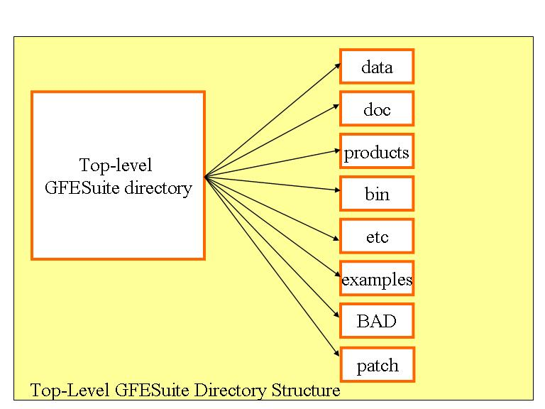
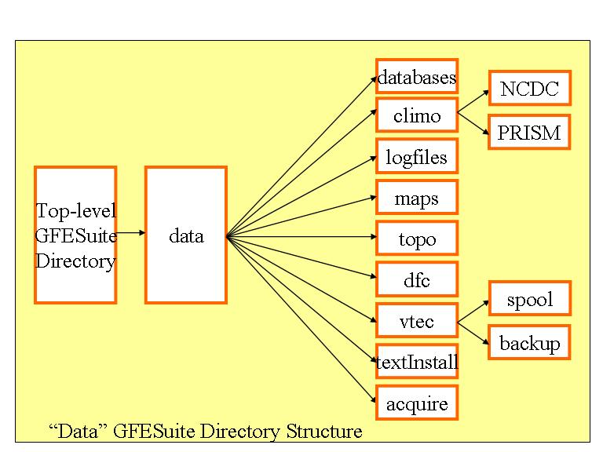
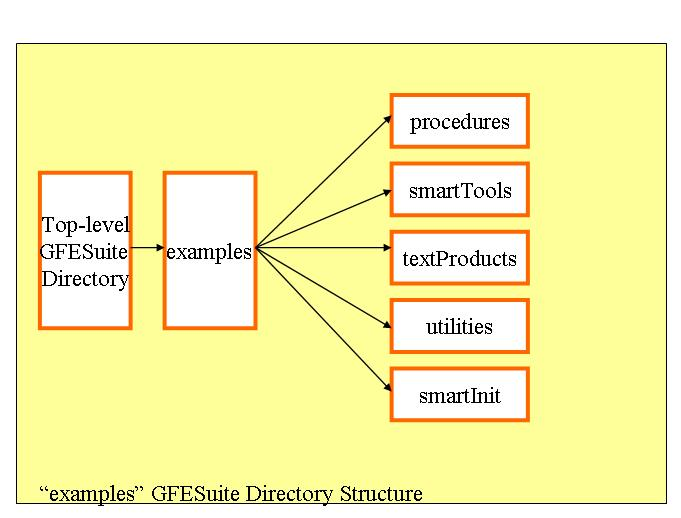
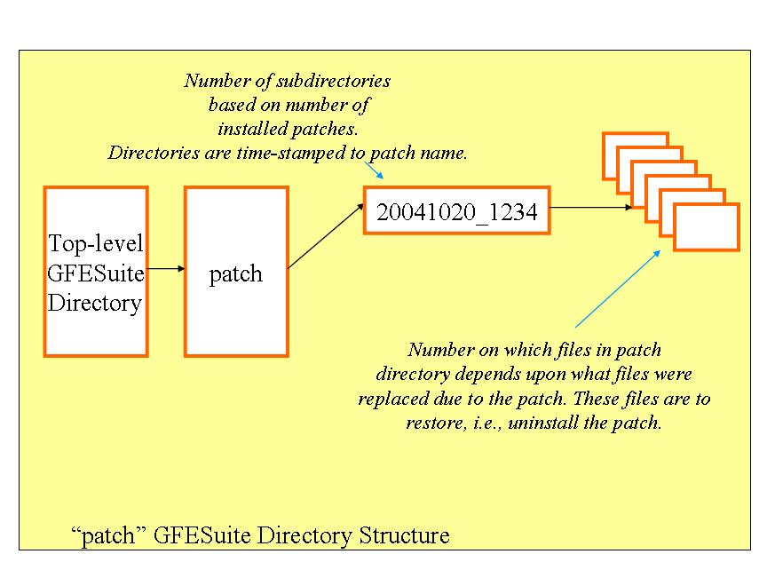
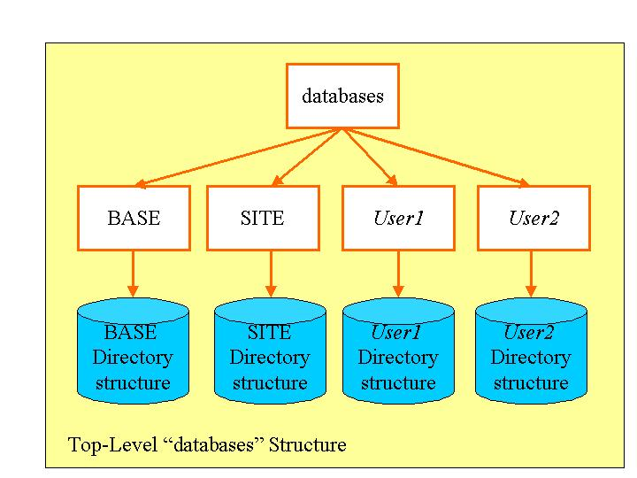
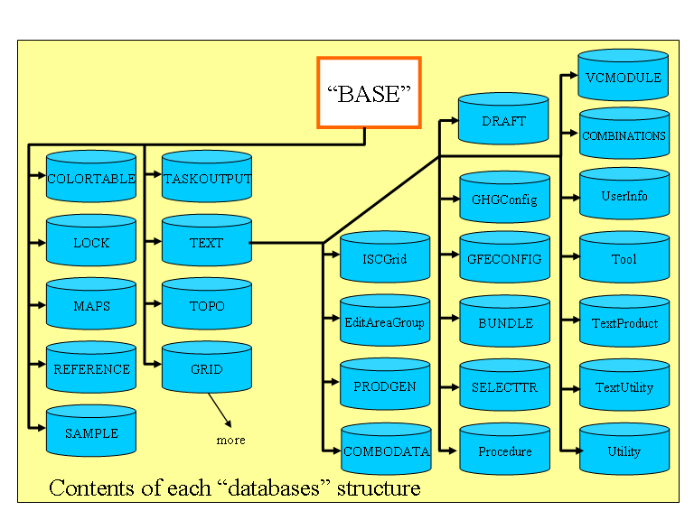
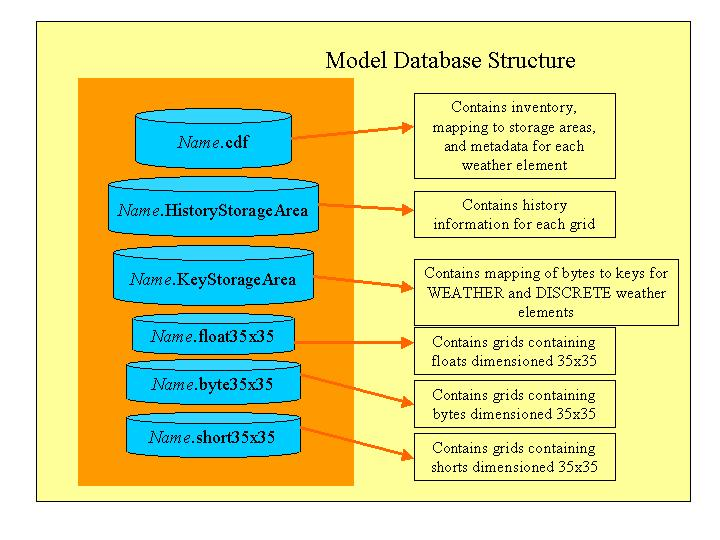
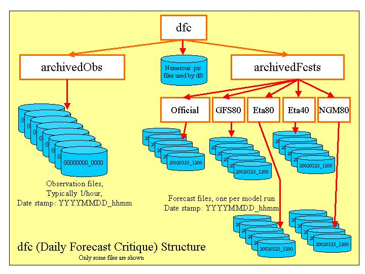
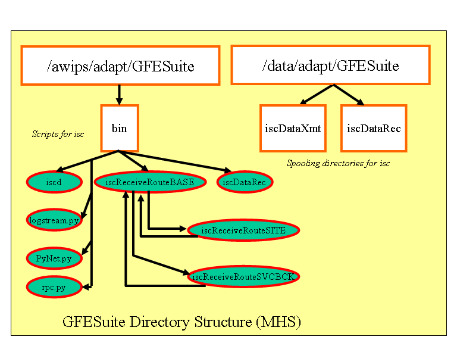

| Directory Name | Purpose |
| data | top-level data directory |
| doc | top-level documentation directory |
| products | top-level products directory |
| bin | top-level executables and scripts directory |
| etc | top-level configuration directory |
| examples | top-level examples directory |
| BAD | holding location for bad database files, ifpServer moves
invalid database
files into this directory. Sometimes other files that the server
cannot recognize are also moved here. Files located here are deleted
after
seven days. |
| patch | location for "saved" versions of files when a patch is
installed. |

The following tables describe files and directory structures within
each of the top-level directories:
| Filename or Directory Name | Purpose |
| data/databases | top-level databases directory |
| data/climo | Top-level file for climate data. |
| data/climo/NCDC | location NCDC climate data files |
| data/climo/PRISM | location of PRISM climate data files |
| data/logfiles | location of logfiles |
| data/maps | input shapefiles for map generation program |
| data/topo | input topography data for topography generation program |
| data/dfc | top-level Daily Forecast Critique directory |
| data/vtec |
directory containing vtec data
files (e.g., active table) |
| data/vtec/backup |
directory containing backup
versions of the active table. The MergeTable and VTECDecoder create
backup versions each time the active table changes. |
| data/vtec/spool |
directory containing spooled
received
text data from NotifyTextProd (D2D AWIPS process) to be decoded by the
VTEC Decoder. |
| data/textInstall |
installation directory
containing templates for the various product formatters. |
| data/acquire |
directory containing text
routing table for D2D's NotifyTextProd. Associated with VTEC. |

| Filename or Directory Name | Purpose |
| doc/onlinehelp | location of all on-line help *.html files |
| doc/test | location of all test plans *.html files. Numerous subdirectories are below this top-level |
| doc/onlinehelp/images | location of all on-line help image files |
| doc/onlinehelp/xxx |
document directories containing
additional *.html and image files. |
| Filename or Directory Name | Purpose |
| products/AG | default location for output of ascii grid files from ifpAG product generation |
| products/IMAGE | default location for output of image (PNGs) from ifpIMAGE product generation |
| products/TEXT | recommended location for output of TEXT from GFESuite text product generation |
| products/ISC | location of files produced for the intersite coordination of grids facility by the ifpnetCDF program. |
| products/NETCDF | recommended location for output of NETCDF files from ifpnetCDF program. |
| products/ATBL |
location of incoming/outgoing
temporary files for VTEC active table merging |
| products/PRACTICE |
location of practice mode text
products. Product files are timestamped and named with their pil. |
| Filename or Directory Name | Purpose |
| bin/configureTextProducts | Configure Text Products utility for querying the afos2awips.txt table for PILs, deleting, and recreating product templates. |
| bin/coordConversion | coordinate conversion utility for AWIPS map coordinates to lat/lon and vice versa |
| bin/dumpAT | VTEC active table dump utility for AWIPS map coordinates to lat/lon and vice versa |
| bin/getNotify | notification debug utility to show database notifications from the ifpServer |
| bin/gfehandleOUP |
GFE interface to the handleOUP
(AWIPS D2D) call. Sets up the correct environment. |
| bin/gfetextdb |
GFE interface to the textdb
(AWIPS D2D) call. Sets up the correct environment. |
| bin/ghgMonitor |
GHG Monitor Program |
| bin/gpython |
Python interpreter using the GFE. |
| bin/ifpAG | ifpAG executable |
| bin/ifpBreakAllLocks | script to break all locks in the server |
| bin/ifpDFC | script to run the interactive daily forecast critique viewer |
| bin/ifpIMAGE | script to run the GFE as the ifpIMAGE program |
| bin/ifpInit | script to run the smart initialization program |
| bin/ifpnetCDF | script to run the ifpnetCDF program. |
| bin/ifpServerStats | program to examine network queues, directory structures, data states of the ifpServer |
| bin/ifpServerText | script to run the ifpServerText program |
| bin/iscMosaic | script to run the iscMosaic program |
| bin/makeD2DFile |
script to run the makeD2DFile program |
| bin/moveGFEData | utility program to move gfe configuration data from one user to another |
| bin/ncdump | ncdump utility - useful for looking at netcdf files |
| bin/ncgen |
ncgen utility - useful for
generating a netcdf file from text |
| bin/publishGFE | publishGFE data utility |
| bin/purgeAllGrids |
script to delete all grids from
a specified database. |
| bin/run | top-level directory for executables and "hidden" scripts. These scripts and programs are not intended to be run directly. |
| bin/runGFE | script to start GFE |
| bin/runIFPServer | script to start the ifpServer |
| bin/runIFPText | script to run text generation (GFE in background mode) |
| bin/runProcedure | script to run a procedure (GFE in background mode) |
| bin/sendGfeMessage |
script to send messages to all
clients connected to the ifpServer, message appears on status bar |
| bin/stopIFPServer | script to stop the ifpServer |
| bin/VERSION | Text file containing GFESuite version information |
| bin/run/archiveObs |
link to gfe executable |
| bin/run/archivePointFcst |
link to gfe executable |
| bin/run/coordConversion | coordConversion
executable |
| bin/run/getNotify |
getNotify executable |
| bin/run/gfe |
GFE executable |
| bin/run/ghETN |
Get Highest ETN - used by
WarnGen for some products |
| bin/run/ghgMonitor |
link to gfe executable |
| bin/run/ifpAG | ifpAG executable |
| bin/run/ifpBreakAllLocks |
link to gfe executable |
| bin/run/ifpDFC |
link to gfe executable |
| bin/run/ifpDFCArchive | routine to run the archive programs for the daily forecast critique |
| bin/run/ifpIMAGE |
link to gfe executable |
| bin/run/ifpInit |
link to gfe executable |
| bin/run/ifpnetCDF |
link to gfe exectuable |
| bin/run/ifpServer | ifpServer executable |
| bin/run/ifpServerStats |
ifpServerStats executable |
| bin/run/ifpServerText |
link to gfe exectuable |
| bin/run/ingestAT |
routine to ingest the VTEC active table from an adjacent site. |
| bin/run/iscExtract, bin/run/iscExtract1 |
Extraction script for intersite coordination of grids |
| bin/run/iscInject | Injection script for intersite coordination of grids |
| bin/run/iscMosaic |
link to gfe executable |
| bin/run/MergeVTEC, bin/run/MergeVTEC1 |
routine to run the MergeVTEC
program, which merges one active table with another |
| bin/run/moveGFEData |
moveGFEData executable |
| bin/run/publishGFE |
publishGFE executable |
| bin/run/purgeAllGrids |
link to gfe executable |
| bin/run/requestAT |
routine that is executed when a
request for the VTEC active table is received |
| bin/run/runIFPText |
link to gfe executable |
| bin/run/runProcedure |
link to gfe executable |
| bin/run/sendAT |
routine to send the VTEC active table to a set of sites |
| bin/run/sendGfeMessage |
link to gfe executable |
| bin/run/setupTextEA,
bin/run/setupTextEA1 |
script plus link to gfe
exectutable for the setupTextEA utility |
| bin/run/site.sh | site configuration and directory location scripts -
automatically generated
upon install |
| bin/run/VTECDecoder,
bin/run/VTECDecoder1 |
VTEC product
decoder for decoding incoming text products and maintaining the
"active" table. |
| Filename or Directory Name | Purpose |
| etc/BASE | location of configuration files for BASE, which are provided as part of the release. No one should make changes in this directory. |
| etc/SITE | location of site-tailored configuration files, used to override settings from files in etc/BASE. |
| etc/TclTk | location of Tcl/Tk release package used with GFESuite |
| etc/BASE/smartInit: GFS40.py, GFS80.py, NAM80.py, NAM40.py, gfsLR.py, NGM80.py, RUC80.py, Init.py (others may be present) | smart initialization scripts for each model |
| etc/BASE/logPref: dfc.logPref, gfe.logPref, ifpIMAGE.logPref, ifpServer.logPref, isc.logPref (others may be present) | logging preferences files for the daily forecast critique, gfe, ifpIMAGE, ifpServer, and isc programs |
| etc/BASE/gfe.zip | Bundled GFE Python library |
| etc/BASE/idleConfig.txt, idleConfig-unix.txt | Python idle editor configuration file |
| etc/BASE/ifpcc.so, ifpc.py, logstream.py | Python IFPServer protocol files |
| etc/BASE/iscSendRouteBASE.py, etc/BASE/iscSendRouteSVCBCK.py | Intersite and Intrasite Transmission Routing Configuration |
| etc/BASE/MapFiles.py | Map background configuration file containing the names of the map shapefiles |
| etc/BASE/Maps.py | Map background configuration file |
| etc/BASE/pylib.zip | Bundled Python library |
| etc/BASE/serverConfig.py | ifpServer configuration file |
| etc/BASE/VTECMessageType.py |
Master control file to
enable/disable VTEC in GFE formatters. |
| etc/BASE/VTECPartners.py |
VTEC
configuration file for active table merges, decodes, and coordination
requests. |
| etc/SITE/localVTECPartners.py |
Site override file for
VTECPartners.py. |
| etc/BASE/siteConfig.py | site configuration and directory location file - automatically generated upon install |
| etc/BASE/lib-dynload | Dynamically loaded Python libraries |
| etc/BASE/noaalogo2.png, nwslogo.png | Logo files for the ifpIMAGE program. |
| etc/SITE/iscSendRouteSITE.py | User created override script for outgoing ISC traffic routing. Intersite and Intrasite Transmission Routing Configuration |
| Filename or Directory Name | Purpose |
| examples/procedures | directory containing examples of procedures |
| examples/smartTools | directory containing examples of smart tools |
| examples/textProducts | directory containing examples of text products |
| examples/utilities | directory containing examples of utilities |
| examples/smartInit |
directory containing examples of
smart initialization modules |

| Filename or Directory Name | Purpose |
| patch/yyyymmdd_hhmm | top-level patch directory. The name of the directory matches the date/time of the patch identifier. The number of subdirectories under this directory is based on which files got replaced during the patch. |


The structure within each of the BASE, SITE, and USER directories is identical, except that the BASE directory has additional items. It is possible that there aren't any SITE or USER directories on the system if there haven't been any local configuration changes to the system.
Each of these directory structures contain:
| Directory Name | Description | Format | Part of Release |
| GRID | grid databases containing grids for models, Forecast, and Official databases (BASE only) | Binary | Created during first run of ifpServer. |
| MAPS | map background cache files (BASE only) | Ascii/Binary | Created during first run of ifpServer. |
| TOPO | topography cache files (BASE only) | Ascii | Created during first run of ifpServer. |
| LOCK | grid database (BASE only) and text file lock files | Ascii | Created during first lock request. |
| COLORTABLE | color table definitions | Binary | YES, user may add more through the GFE. |
| SAMPLE | Sample set definitions | Ascii | NO, user may add entries through the GFE. |
| REFERENCE | Edit area definitions | Ascii | Created during first run of ifpServer, user may add more through the GFE. |
| TASKOUTPUT |
Temporary Spooling area for
Background Tasks |
Ascii |
Created when gfe-initiated
background tasks are queued to run on the ifpServer. |
| TEXT/BUNDLE |
Saved weather element groups. |
Ascii |
Yes, user may add more through
the GFE. |
| TEXT/COMBODATA | Saved combinations files for different products. Also contains the color map for the zone combiner. | Binary | Yes. User creates combinations files and color maps through the Formatter Launcher. |
| TEXT/COMBINATIONS |
Text product combination files. |
Binary |
Yes. User creates
combinations file through the Formatter
Launcher. |
| TEXT/DRAFT |
Contains Product Editor Draft
files. |
Binary |
No. User creates through
the product editor. |
| TEXT/EditAreaGroup | Edit area group definitions | Binary | Created during first run of ifpServer, user may add more through the GFE. |
| TEXT/GFECONFIG | GFE configuration files | Ascii | YES, user may add more through the GFE. |
| TEXT/GHGConfig |
GHG Monitor configuration file |
Binary |
Created upon user command from
the GHG Monitor |
| TEXT/ISCGrid | Temporary caching of ISC edit areas in grid format | Binary | Created when running the ISC_Discrepancies procedure and used as a cache to increase performance. |
| TEXT/Procedure |
Contains procedures. |
Ascii |
Yes, user may add more through
the GFE. |
| TEXT/PRODGEN |
Temporary holding location for
generated products and scripts. |
Ascii |
No. These files are controlled
by the ifpServer and are temporary in nature. |
| TEXT/SELECTTR |
Selection time range definitions |
Ascii |
YES, user may add more through
the GFE. |
| TEXT/TextProduct |
Text Product definitions |
Ascii |
YES, user may add more through
the GFE. |
| TEXT/TextUtility |
Text Utility definitions |
Ascii |
YES, user may add more through
the GFE. |
| TEXT/Tool |
Smart Tool definitions |
Ascii |
YES, user may add more through
the GFE. |
| TEXT/UserInfo/ifpUsers.UserInfo |
User and configuration startup
file |
Ascii |
NO, automatically generated. |
| TEXT/Utility |
Utility definitions (for smart
tools and procedures) |
Ascii |
YES, user may add more through
the GFE. |
| TEXT/VCMODULE |
Virtual Parm Definition Files |
Ascii |
YES, user may add more.
Currently no interface is provided. |

The name of each database represents the:

The main file is the *.cdf file. It contains the following
information:
The byte35x35, short35x35, and float35x35 are storage areas for the grids. The 35x35 signifies the grid size. If your system has different grid sizes, then these numbers will be different. The byte area stores grids that are represented in bytes. The float area stores grids that are represented in floats. The short area stores grids that are represented as a short. The byte area represents grids that are stored in bytes. This file automatically grows as more space is needed.
The KeyStorageArea contains keys for each grid of type WEATHER and
DISCRETE. These grids
are unlike other grids in that an index is stored in the grid, and the
key is needed to decode the index.

| Filename or Location | Purpose |
| dfc | top-level daily forecast critique directory |
| archivedObs | directory containing hourly time-stamped files containing observational data. Filenames are in the YYYYMMDD_hhmm format. |
| archivedFcsts | directory containing multiple directories representating models or the official forecast database |
| archivedFcsts/... | directory containing forecast files for models or the official database. The files are timestamped which represent the model run. The official database files are timestamped which represent the time at which the official database was published (to the nearest hour). |
| dfc/*.pic | Pickled-python files used to keep track of the archived observations and forecasts. |
| Filename or Location | Purpose |
| active.tbl |
Pickled-python file containing the active table representing
the current state of VTEC. |
| active.tbllock |
Lock file for the active table,
used to enforce the write locking and read locking. |
| PRACTICE.tbl |
Pickled-python file containing
the active table used in PRACTICE mode, represents the current state of
the VTEC in PRACTICE mode. |
| PRACTICE.tbllock |
Lock file for the PRACTICE
active table, used to enforce the write lock and read locking. |
| empty.tbl |
Empty pickled-python file
containing no records. Used (manually) in the event the active
table has become hopelessly corrupted. |
| empty.tbllock |
Lock file for the "empty" active
table, used to enforce the write lock and read locking. |
| spool/* |
Transient files written by the
AWIPS D2D NotifyTextProd process, read by the VTEC Decoder. |
| backup/* |
Series of files, generally 168
hours of backup versions, for the active table. Each time the
active table changes, the process responsible (VTECDecoder or
ingestAT/MergeVTEC) writes out a compressed version of the previous
state and time stamps it. Helpful in diagnosing problems or for
manual recovery. |
The text install directories are used for configuring the GFE
formatters that are "templated". When GFE is installed, the
formatters are created from templates. The templates, and the
routines to expand them into products are contained in the text
installation directory structure.
| Filename or Location | Purpose |
| afos2awips.txt |
backup table mapping WMOIDs to
PILs for each site. This table is only used if the primary table
cannot be found on the AWIPS system. |
| TextProduct_BASE |
directory containing TextProduct
templates that will be expanded into the BASE/TEXT/TextProduct
directory. |
| TextUtility_BASE |
directory containing TextUtility
templates that will be expanded into the BASE/TEXT/TextUtility
directory. |
There are two spooling directories for incoming and outgoing
messages
to the AWIPS Message Handling System, and three scripts to support the
intersite coordination grids.
| Filename or Location | Purpose | Part of Release |
| /data/adapt/GFESuite/iscDataXmt | Spooling directory for intersite coordination data to be transmitted over the AWIPS WAN to other sites. | Created through isc installation script. |
| /data/adapt/GFESuite/iscDataRec | Spooling directory for intersite coordination data that is received from the AWIPS WAN. | Created through isc installation script. |
| /awips/adapt/GFESuite/bin/iscd | Transmit daemon to send data to the AWIPS MHS system. | Installed through isc installation script. |
| /awips/adapt/GFESuite/bin/iscDataRec | Receive script called by the AWIPS MHS (Message Handling System) when intersite data has been received from other sites. | Installed through isc installation script. |
| /awips/adapt/GFESuite/bin/iscReceiveRouteBASE.py | Configuration information used by the iscDataXmt and iscDataRec scripts. | Created through isc installation script. |
| /awips/adapt/GFESuite/bin/logstream.py, PyNet.py, rpc.py | Additional files needed to support ISC. | Created through isc installation script. |
| /awips/adapt/GFESuite/bin/iscReceiveRouteSVCBCK.py | Service backup override script for iscReceiveRouteBASE | Created during service backup operations by scripts. |
| /awips/adapt/GFESuite/bin/iscReceiveRouteSITE.py | User override for incoming routing information. Overrides iscReceiveRouteBASE.py | User-created. |
